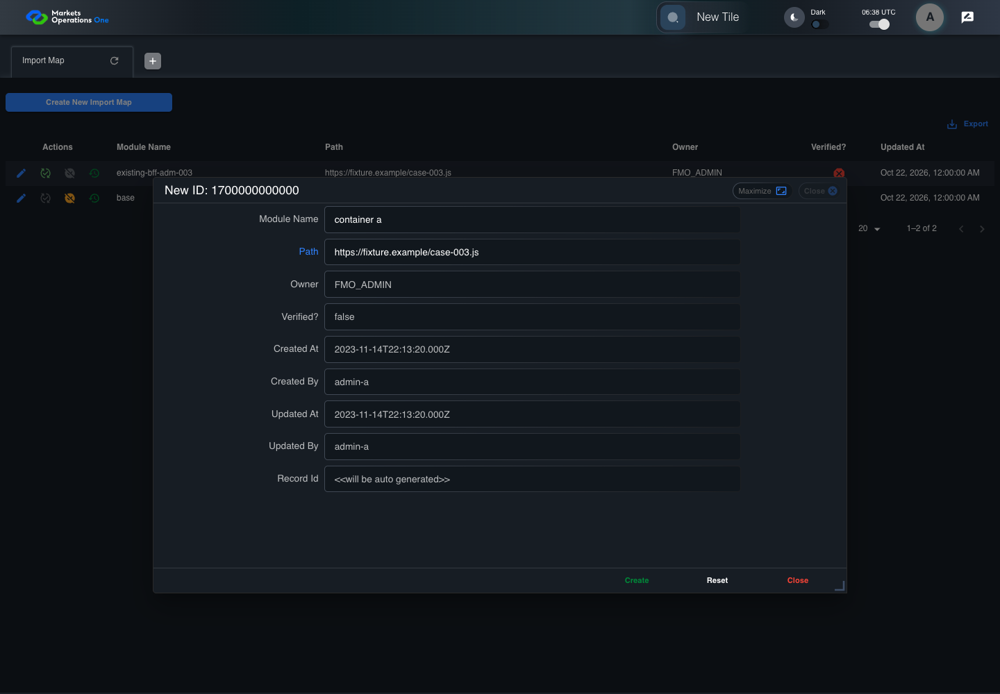
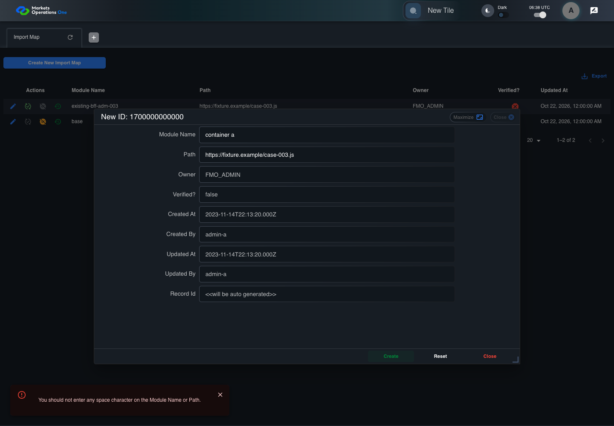
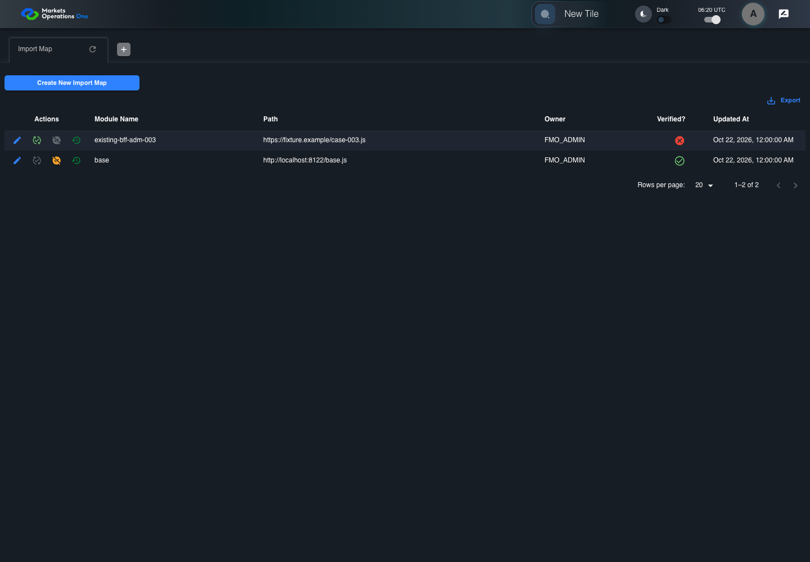
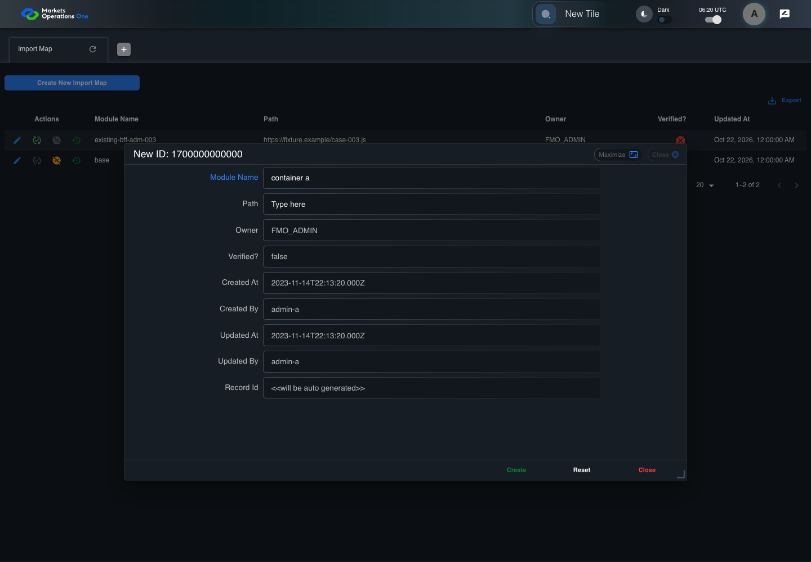
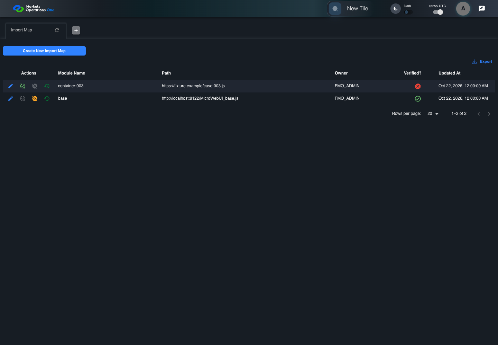
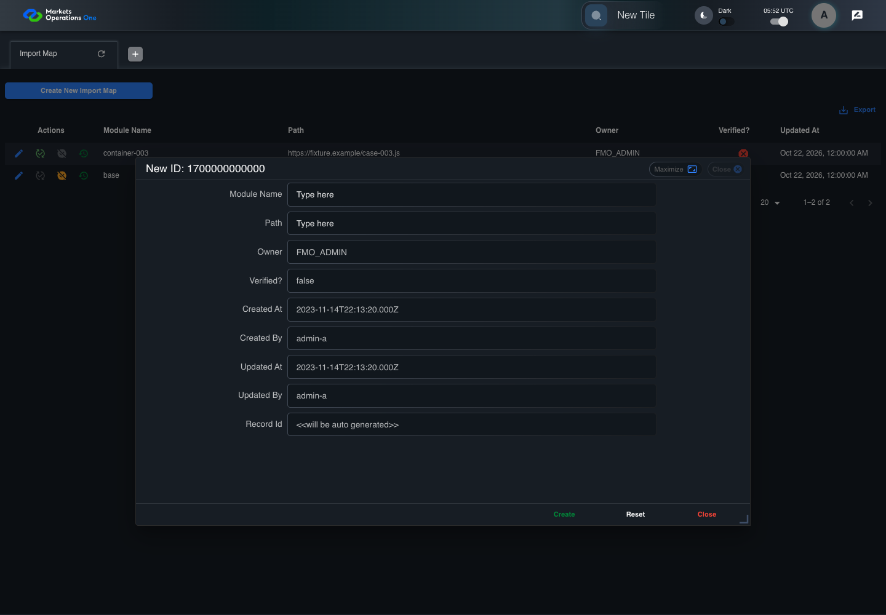
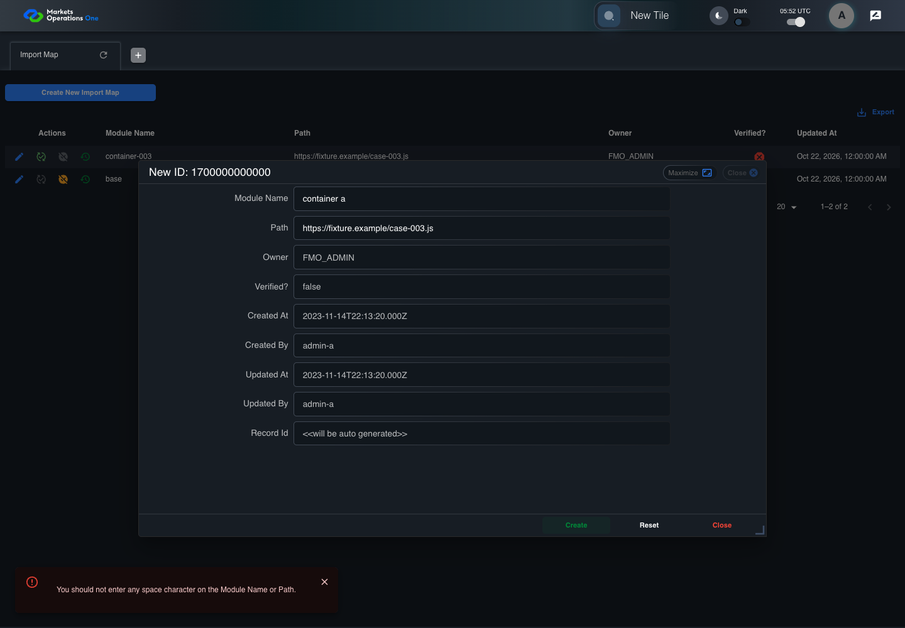

All canonical cases
BFF-ADM-003: Reject embedded spaces in Import Map Module Name on create Business acceptance remains unverified. Owner: unknown. Review the canonical definition and fixture limits before acceptance.
Latest local result: PASS Business acceptance: NOT_ESTABLISHED.
The latest local result describes execution. The historical definition review assesses the case design before execution.
Latest step screenshot evidence: COMPLETE . 13/13 canonical steps have execution screenshots.
Canonical Gherkin definition . Definition version: 2. SHA-256: fef37ee7b9328e30c648290285f65f9fc3628fc989403e3ef9e93d71cfdb0598.
Historical definition review (preflight): UNVERIFIED A definition review FAIL can coexist with local PASS. The definition failed preflight quality checks.
This historical review does not change the latest execution result. Resolve definition gaps before business acceptance.
Canonical Gherkin steps Feature: Admin validation
@BFF-ADM-003
Scenario: Reject embedded spaces in Import Map Module Name on create
Given Admin A uses subject "admin-a" with role "FMO_ADMIN" in an isolated authenticated browser
And the controlled Import Map fixture records the initial grid rows and persisted values
And the controlled creation clock returns 1700000000000 milliseconds
And the baseline fixture data defines "Module Name" as "container-003"
And the baseline fixture data defines "Path" as "https://fixture.example/case-003.js"
When Admin A clicks the button labeled "Create New Import Map" on the Import Map administration page
Then the dialog titled "new ID: 1700000000000" is visible on the Import Map administration page
When Admin A fills the textbox labeled "Module Name" with "container a" in dialog "new ID: 1700000000000"
And Admin A fills the textbox labeled "Path" with "https://fixture.example/case-003.js" in dialog "new ID: 1700000000000"
And Admin A clicks the button labeled "Create" in dialog "new ID: 1700000000000"
Then the dialog titled "new ID: 1700000000000" remains visible on the Import Map administration page
And the alert with severity "error" in the portal snackbar contains the exact text "You should not enter any space character on the Module Name or Path."
And the Import Map data grid with column "Record Id" row identifiers and loaded field values equal the initial grid snapshot on the Import Map administration page Acceptance and evidence limits: NO_COMPLETE_REAL_APPLICATION_BINDING, CANONICAL_REVIEW_OR_EVIDENCE_UNRESOLVED.
Planned essential canonical frames: 3. Plan completeness requires separate review.
Latest attempt BFF-ADM-003 current BFF administration through actual UI PASS · application/run-072/bff-adm-003-current-bff-administration-through-actual-ui-790851ae6415-attempt-1 · ACTUAL_APPLICATION_LOCAL_SERVICES
Actual current React and exact-current BFF admin controllers/services/JPA with actual migration DDL in disposable PostgreSQL. Controlled OUD/EMS2 identities and local Spring bootstrap. Fixture SQL seeds/mutates isolated records; service errors are actual database errors. Undefined agreed messages remain unresolved acceptance.
2026-10-22T06:38:39.517Z to 2026-10-22T06:38:43.222Z
Assertions and result · Artifact manifest · Exact run inputs and source hashes
Result SHA-256: 145042cefecbbfcbe4f64a0e23974de984b097b59b9ad8c13245e868fb7a8778 Playwright trace
Machine observations Screenshot capture: CAPTURED. Named frames: 14.
Step screenshot evidence: COMPLETE. 13/13 canonical steps have execution screenshots.
Canonical step timeline Given Admin A uses subject "admin-a" with role "FMO_ADMIN" in an isolated authenticated browser
1. step-01 Visible state after step 1: Given Admin A uses subject "admin-a" with role "FMO_ADMIN" in an isolated authenticated browser
2026-10-22T06:38:41.065Z · 1440×100011cb449bfd3d1ffdf9bd66ca17738226134228565eab73c3ae9c3bdcce1a0c15 And the controlled Import Map fixture records the initial grid rows and persisted values
2. step-02 Visible state after step 2: And the controlled Import Map fixture records the initial grid rows and persisted values
2026-10-22T06:38:41.182Z · 1440×100011cb449bfd3d1ffdf9bd66ca17738226134228565eab73c3ae9c3bdcce1a0c15 And the controlled creation clock returns 1700000000000 milliseconds
3. step-03 Visible state after step 3: And the controlled creation clock returns 1700000000000 milliseconds
2026-10-22T06:38:41.217Z · 1440×1000a66b7f2a7faba017ecc364a0f5bf13a204ef253b45512b31cb92f16b2be1ee3d And the baseline fixture data defines "Module Name" as "container-003"
4. step-04 Visible state after step 4: And the baseline fixture data defines "Module Name" as "container-003"
2026-10-22T06:38:41.262Z · 1440×100011cb449bfd3d1ffdf9bd66ca17738226134228565eab73c3ae9c3bdcce1a0c15 And the baseline fixture data defines "Path" as "https://fixture.example/case-003.js"
5. step-05 Visible state after step 5: And the baseline fixture data defines "Path" as "https://fixture.example/case-003.js"
2026-10-22T06:38:41.296Z · 1440×1000a66b7f2a7faba017ecc364a0f5bf13a204ef253b45512b31cb92f16b2be1ee3d When Admin A clicks the button labeled "Create New Import Map" on the Import Map administration page
6. step-06 Visible state after step 6: When Admin A clicks the button labeled "Create New Import Map" on the Import Map administration page
2026-10-22T06:38:41.497Z · 1440×10000e58ff14dccf8e9267ef35f2a3ca7935836d936a2434e53b55e88242b34d6b92 Then the dialog titled "new ID: 1700000000000" is visible on the Import Map administration page
7. step-07 Visible state after step 7: Then the dialog titled "new ID: 1700000000000" is visible on the Import Map administration page
2026-10-22T06:38:41.575Z · 1440×100065ba0dcd6f64fc1d72829e27a4d40c7836db69959601211609450d8483d40d9b When Admin A fills the textbox labeled "Module Name" with "container a" in dialog "new ID: 1700000000000"
8. step-08 Visible state after step 8: When Admin A fills the textbox labeled "Module Name" with "container a" in dialog "new ID: 1700000000000"
2026-10-22T06:38:41.986Z · 1440×1000f93f8b45444d30f99e2d7abf5cf5b8da7dc42e737d446d0e6f229fe4fced7782 And Admin A fills the textbox labeled "Path" with "https://fixture.example/case-003.js" in dialog "new ID: 1700000000000"

9. step-09 Visible state after step 9: And Admin A fills the textbox labeled "Path" with "https://fixture.example/case-003.js" in dialog "new ID: 1700000000000"
2026-10-22T06:38:42.427Z · 1440×10004856bfc0218bbc87bd49a722b9fba34b0720c29a39e801cdd9971ed2e0b87080 And Admin A clicks the button labeled "Create" in dialog "new ID: 1700000000000"
10. step-10 Visible state after step 10: And Admin A clicks the button labeled "Create" in dialog "new ID: 1700000000000"
2026-10-22T06:38:42.673Z · 1440×1000850477dfe9e0cfaab8ba90406602a40308679d46e62c59b42e9ff826fc771e89 Then the dialog titled "new ID: 1700000000000" remains visible on the Import Map administration page

11. step-11 Visible state after step 11: Then the dialog titled "new ID: 1700000000000" remains visible on the Import Map administration page
2026-10-22T06:38:42.723Z · 1440×10005e950f4c025c6c036cd56f7a7278905df2b31b63cc9b55f4c16c6fa4079a3013 And the alert with severity "error" in the portal snackbar contains the exact text "You should not enter any space character on the Module Name or Path."
12. step-12 Visible state after step 12: And the alert with severity "error" in the portal snackbar contains the exact text "You should not enter any space character on the Module Name or Path."
2026-10-22T06:38:42.772Z · 1440×10005e950f4c025c6c036cd56f7a7278905df2b31b63cc9b55f4c16c6fa4079a3013 And the Import Map data grid with column "Record Id" row identifiers and loaded field values equal the initial grid snapshot on the Import Map administration page
13. step-13 Visible state after step 13: And the Import Map data grid with column "Record Id" row identifiers and loaded field values equal the initial grid snapshot on the Import Map administration page
2026-10-22T06:38:42.890Z · 1440×10005e950f4c025c6c036cd56f7a7278905df2b31b63cc9b55f4c16c6fa4079a3013 Additional named frames 14. final-result The final visible state after the named test assertions.
2026-10-22T06:38:42.968Z · 1440×10005e950f4c025c6c036cd56f7a7278905df2b31b63cc9b55f4c16c6fa4079a3013 Screenshots establish visible state only. Assertions and traces support functional claims.
Earlier attempt history (3) Earlier attempt PASS (superseded by latest PASS) BFF-ADM-003 current BFF administration through actual UI PASS · application/run-066/bff-adm-003-current-bff-administration-through-actual-ui-790851ae6415-attempt-1 · ACTUAL_APPLICATION_LOCAL_SERVICES
Actual current React and exact-current BFF admin controllers/services/JPA with actual migration DDL in disposable PostgreSQL. Controlled OUD/EMS2 identities and local Spring bootstrap. Fixture SQL seeds/mutates isolated records; service errors are actual database errors. Undefined agreed messages remain unresolved acceptance.
2026-10-22T06:20:11.726Z to 2026-10-22T06:20:15.194Z
Assertions and result · Artifact manifest · Exact run inputs and source hashes
Result SHA-256: 3d16871e1f4b532b59882fa66aa9f5f6004ac58a8cd40aa02c3a7c1886e2318c Playwright trace
Machine observations Screenshot capture: CAPTURED. Named frames: 14.
Step screenshot evidence: COMPLETE. 13/13 canonical steps have execution screenshots.
Canonical step timeline Given Admin A uses subject "admin-a" with role "FMO_ADMIN" in an isolated authenticated browser
1. step-01 Visible state after step 1: Given Admin A uses subject "admin-a" with role "FMO_ADMIN" in an isolated authenticated browser
2026-10-22T06:20:13.182Z · 1440×1000ddc72fc75f7820b6b88f389f786eccc71110266b65b3c970f1b0edc20f578f90 And the controlled Import Map fixture records the initial grid rows and persisted values
2. step-02 Visible state after step 2: And the controlled Import Map fixture records the initial grid rows and persisted values
2026-10-22T06:20:13.284Z · 1440×1000ddc72fc75f7820b6b88f389f786eccc71110266b65b3c970f1b0edc20f578f90 And the controlled creation clock returns 1700000000000 milliseconds

3. step-03 Visible state after step 3: And the controlled creation clock returns 1700000000000 milliseconds
2026-10-22T06:20:13.313Z · 1440×100068dc7489a04e73d350f133f1cb98265695134c526a70a464ca990da929c984ed And the baseline fixture data defines "Module Name" as "container-003"
4. step-04 Visible state after step 4: And the baseline fixture data defines "Module Name" as "container-003"
2026-10-22T06:20:13.345Z · 1440×1000ddc72fc75f7820b6b88f389f786eccc71110266b65b3c970f1b0edc20f578f90 And the baseline fixture data defines "Path" as "https://fixture.example/case-003.js"
5. step-05 Visible state after step 5: And the baseline fixture data defines "Path" as "https://fixture.example/case-003.js"
2026-10-22T06:20:13.380Z · 1440×100068dc7489a04e73d350f133f1cb98265695134c526a70a464ca990da929c984ed When Admin A clicks the button labeled "Create New Import Map" on the Import Map administration page
6. step-06 Visible state after step 6: When Admin A clicks the button labeled "Create New Import Map" on the Import Map administration page
2026-10-22T06:20:13.545Z · 1440×1000d471c76c14b5db0e3f69b7853457bb90eb2d9dbb9a44de5f1637e92ef5adb70c Then the dialog titled "new ID: 1700000000000" is visible on the Import Map administration page
7. step-07 Visible state after step 7: Then the dialog titled "new ID: 1700000000000" is visible on the Import Map administration page
2026-10-22T06:20:13.603Z · 1440×1000b27de05179ef4e552000ca8146b12e1e5735fafd13bb07364405822a6d268e0f When Admin A fills the textbox labeled "Module Name" with "container a" in dialog "new ID: 1700000000000"

8. step-08 Visible state after step 8: When Admin A fills the textbox labeled "Module Name" with "container a" in dialog "new ID: 1700000000000"
2026-10-22T06:20:14.020Z · 1440×1000f60d96d95ffd04e394654ffac47efd2655756e73db843986221d89c28f72c4cb And Admin A fills the textbox labeled "Path" with "https://fixture.example/case-003.js" in dialog "new ID: 1700000000000"
9. step-09 Visible state after step 9: And Admin A fills the textbox labeled "Path" with "https://fixture.example/case-003.js" in dialog "new ID: 1700000000000"
2026-10-22T06:20:14.441Z · 1440×1000a1d0cdd64b8460e695000e795d67abab11d12641b4af9537160dcd996eaf1ebc And Admin A clicks the button labeled "Create" in dialog "new ID: 1700000000000"
10. step-10 Visible state after step 10: And Admin A clicks the button labeled "Create" in dialog "new ID: 1700000000000"
2026-10-22T06:20:14.688Z · 1440×100089028b0bdb51f854146a427a6dd12a0c3a6df52bd31ee6c16d1d0c22431dff9a Then the dialog titled "new ID: 1700000000000" remains visible on the Import Map administration page
11. step-11 Visible state after step 11: Then the dialog titled "new ID: 1700000000000" remains visible on the Import Map administration page
2026-10-22T06:20:14.739Z · 1440×100070dec49ba8a0f4e51da673405eeb1719e4c761acb487ebe1cd6904119f6da23f And the alert with severity "error" in the portal snackbar contains the exact text "You should not enter any space character on the Module Name or Path."
12. step-12 Visible state after step 12: And the alert with severity "error" in the portal snackbar contains the exact text "You should not enter any space character on the Module Name or Path."
2026-10-22T06:20:14.785Z · 1440×100070dec49ba8a0f4e51da673405eeb1719e4c761acb487ebe1cd6904119f6da23f And the Import Map data grid with column "Record Id" row identifiers and loaded field values equal the initial grid snapshot on the Import Map administration page
13. step-13 Visible state after step 13: And the Import Map data grid with column "Record Id" row identifiers and loaded field values equal the initial grid snapshot on the Import Map administration page
2026-10-22T06:20:14.886Z · 1440×100070dec49ba8a0f4e51da673405eeb1719e4c761acb487ebe1cd6904119f6da23f Additional named frames 14. final-result The final visible state after the named test assertions.
2026-10-22T06:20:14.952Z · 1440×100070dec49ba8a0f4e51da673405eeb1719e4c761acb487ebe1cd6904119f6da23f Screenshots establish visible state only. Assertions and traces support functional claims.
Earlier attempt PASS (superseded by latest PASS) BFF-ADM-003 current BFF administration through actual UI PASS · application/run-062/bff-adm-003-current-bff-administration-through-actual-ui-790851ae6415-attempt-1 · ACTUAL_APPLICATION_LOCAL_SERVICES
Actual current React and exact-current BFF admin controllers/services/JPA with actual migration DDL in disposable PostgreSQL. Controlled OUD/EMS2 identities and local Spring bootstrap. Fixture SQL seeds/mutates isolated records; service errors are actual database errors. Undefined agreed messages remain unresolved acceptance.
2026-10-22T05:55:58.427Z to 2026-10-22T05:56:01.841Z
Assertions and result · Artifact manifest · Exact run inputs and source hashes
Result SHA-256: 66bfdaec2ec7fb7ca0d75f0114dcb469dbd276223f185ed430f475f497c3e13e Playwright trace
Machine observations Screenshot capture: CAPTURED. Named frames: 14.
Step screenshot evidence: COMPLETE. 13/13 canonical steps have execution screenshots.
Canonical step timeline Given Admin A uses subject "admin-a" with role "FMO_ADMIN" in an isolated authenticated browser

1. step-01 Visible state after step 1: Given Admin A uses subject "admin-a" with role "FMO_ADMIN" in an isolated authenticated browser
2026-10-22T05:55:59.902Z · 1440×100079abcc5fc71fbddd437434a53deea3ec559a2538180a61d9bc226f747cf4f31f And the controlled Import Map fixture records the initial grid rows and persisted values
2. step-02 Visible state after step 2: And the controlled Import Map fixture records the initial grid rows and persisted values
2026-10-22T05:56:00.020Z · 1440×100079abcc5fc71fbddd437434a53deea3ec559a2538180a61d9bc226f747cf4f31f And the controlled creation clock returns 1700000000000 milliseconds
3. step-03 Visible state after step 3: And the controlled creation clock returns 1700000000000 milliseconds
2026-10-22T05:56:00.050Z · 1440×1000a8a5bb90fd5b1a2e2807c121562603429723c023550a6fae3110827dc63da7c0 And the baseline fixture data defines "Module Name" as "container-003"
4. step-04 Visible state after step 4: And the baseline fixture data defines "Module Name" as "container-003"
2026-10-22T05:56:00.084Z · 1440×100079abcc5fc71fbddd437434a53deea3ec559a2538180a61d9bc226f747cf4f31f And the baseline fixture data defines "Path" as "https://fixture.example/case-003.js"
5. step-05 Visible state after step 5: And the baseline fixture data defines "Path" as "https://fixture.example/case-003.js"
2026-10-22T05:56:00.116Z · 1440×1000a8a5bb90fd5b1a2e2807c121562603429723c023550a6fae3110827dc63da7c0 When Admin A clicks the button labeled "Create New Import Map" on the Import Map administration page
6. step-06 Visible state after step 6: When Admin A clicks the button labeled "Create New Import Map" on the Import Map administration page
2026-10-22T05:56:00.273Z · 1440×1000e2c407bb49c6cfcdea9851e3c09d4027fa79f58b1fc7a2836014ff8fd91c81b6 Then the dialog titled "new ID: 1700000000000" is visible on the Import Map administration page
7. step-07 Visible state after step 7: Then the dialog titled "new ID: 1700000000000" is visible on the Import Map administration page
2026-10-22T05:56:00.322Z · 1440×10003ee5efa8b41a6efcf58c6c8a291f39972584dbbdbeeb100efd742a8bd2e729b8 When Admin A fills the textbox labeled "Module Name" with "container a" in dialog "new ID: 1700000000000"
8. step-08 Visible state after step 8: When Admin A fills the textbox labeled "Module Name" with "container a" in dialog "new ID: 1700000000000"
2026-10-22T05:56:00.689Z · 1440×100078195260bb2beb55a41f957119f16a5d87dd0a17fda9d8d4275d9db985afd143 And Admin A fills the textbox labeled "Path" with "https://fixture.example/case-003.js" in dialog "new ID: 1700000000000"
9. step-09 Visible state after step 9: And Admin A fills the textbox labeled "Path" with "https://fixture.example/case-003.js" in dialog "new ID: 1700000000000"
2026-10-22T05:56:01.078Z · 1440×10001d3f473c2ecd1f02ee6437ff5f799822c539b0e6c74b9e0bd20fc3c74ce93ac3 And Admin A clicks the button labeled "Create" in dialog "new ID: 1700000000000"
10. step-10 Visible state after step 10: And Admin A clicks the button labeled "Create" in dialog "new ID: 1700000000000"
2026-10-22T05:56:01.325Z · 1440×1000b081ceafd84987d4ab577c4c47c0256fdad61d31d490c840941eb67ae30964cf Then the dialog titled "new ID: 1700000000000" remains visible on the Import Map administration page
11. step-11 Visible state after step 11: Then the dialog titled "new ID: 1700000000000" remains visible on the Import Map administration page
2026-10-22T05:56:01.371Z · 1440×10000a25b5fa696c7a2ad7d9766cc95c8ce8f07858394c5628ccac36b7a8bf93f354 And the alert with severity "error" in the portal snackbar contains the exact text "You should not enter any space character on the Module Name or Path."
12. step-12 Visible state after step 12: And the alert with severity "error" in the portal snackbar contains the exact text "You should not enter any space character on the Module Name or Path."
2026-10-22T05:56:01.423Z · 1440×10000a25b5fa696c7a2ad7d9766cc95c8ce8f07858394c5628ccac36b7a8bf93f354 And the Import Map data grid with column "Record Id" row identifiers and loaded field values equal the initial grid snapshot on the Import Map administration page
13. step-13 Visible state after step 13: And the Import Map data grid with column "Record Id" row identifiers and loaded field values equal the initial grid snapshot on the Import Map administration page
2026-10-22T05:56:01.523Z · 1440×10000a25b5fa696c7a2ad7d9766cc95c8ce8f07858394c5628ccac36b7a8bf93f354 Additional named frames 14. final-result The final visible state after the named test assertions.
2026-10-22T05:56:01.604Z · 1440×10000a25b5fa696c7a2ad7d9766cc95c8ce8f07858394c5628ccac36b7a8bf93f354 Screenshots establish visible state only. Assertions and traces support functional claims.
Earlier attempt PASS (superseded by latest PASS) BFF-ADM-003 current BFF administration through actual UI PASS · application/run-061/bff-adm-003-current-bff-administration-through-actual-ui-790851ae6415-attempt-1 · ACTUAL_APPLICATION_LOCAL_SERVICES
Actual current React and exact-current BFF admin controllers/services/JPA with actual migration DDL in disposable PostgreSQL. Controlled OUD/EMS2 identities and local Spring bootstrap. Fixture SQL seeds/mutates isolated records; service errors are actual database errors. Undefined agreed messages remain unresolved acceptance.
2026-10-22T05:52:23.296Z to 2026-10-22T05:52:26.685Z
Assertions and result · Artifact manifest · Exact run inputs and source hashes
Result SHA-256: 6f2f72e5b85e667568bfa9fcc1e420c7da5b26f964a153525fb660500992bbcd Playwright trace
Machine observations Screenshot capture: CAPTURED. Named frames: 14.
Step screenshot evidence: COMPLETE. 13/13 canonical steps have execution screenshots.
Canonical step timeline Given Admin A uses subject "admin-a" with role "FMO_ADMIN" in an isolated authenticated browser
1. step-01 Visible state after step 1: Given Admin A uses subject "admin-a" with role "FMO_ADMIN" in an isolated authenticated browser
2026-10-22T05:52:24.748Z · 1440×1000d18496debc070703cc7a420c7922a21d93118c3ec4f83c1a103b2f77fe2a13a1 And the controlled Import Map fixture records the initial grid rows and persisted values
2. step-02 Visible state after step 2: And the controlled Import Map fixture records the initial grid rows and persisted values
2026-10-22T05:52:24.863Z · 1440×1000d18496debc070703cc7a420c7922a21d93118c3ec4f83c1a103b2f77fe2a13a1 And the controlled creation clock returns 1700000000000 milliseconds
3. step-03 Visible state after step 3: And the controlled creation clock returns 1700000000000 milliseconds
2026-10-22T05:52:24.896Z · 1440×1000cd174534d29d05579c2934b5f87d2d003cae4d924edea31f22af5d7da0d25e74 And the baseline fixture data defines "Module Name" as "container-003"
4. step-04 Visible state after step 4: And the baseline fixture data defines "Module Name" as "container-003"
2026-10-22T05:52:24.928Z · 1440×1000d18496debc070703cc7a420c7922a21d93118c3ec4f83c1a103b2f77fe2a13a1 And the baseline fixture data defines "Path" as "https://fixture.example/case-003.js"
5. step-05 Visible state after step 5: And the baseline fixture data defines "Path" as "https://fixture.example/case-003.js"
2026-10-22T05:52:24.962Z · 1440×1000cd174534d29d05579c2934b5f87d2d003cae4d924edea31f22af5d7da0d25e74 When Admin A clicks the button labeled "Create New Import Map" on the Import Map administration page

6. step-06 Visible state after step 6: When Admin A clicks the button labeled "Create New Import Map" on the Import Map administration page
2026-10-22T05:52:25.120Z · 1440×1000cede01966ffbe1a380bdfe69a7674c39f998ee58a3c5611cdd10c6d0331c2db5 Then the dialog titled "new ID: 1700000000000" is visible on the Import Map administration page
7. step-07 Visible state after step 7: Then the dialog titled "new ID: 1700000000000" is visible on the Import Map administration page
2026-10-22T05:52:25.165Z · 1440×100033c89e811c056797befb449a0d333dcf15230462e1233b6dbc3880e3ba3f761d When Admin A fills the textbox labeled "Module Name" with "container a" in dialog "new ID: 1700000000000"
8. step-08 Visible state after step 8: When Admin A fills the textbox labeled "Module Name" with "container a" in dialog "new ID: 1700000000000"
2026-10-22T05:52:25.553Z · 1440×1000c62590eded10669b096c356c793763352552242917949d74c732db54099fe574 And Admin A fills the textbox labeled "Path" with "https://fixture.example/case-003.js" in dialog "new ID: 1700000000000"
9. step-09 Visible state after step 9: And Admin A fills the textbox labeled "Path" with "https://fixture.example/case-003.js" in dialog "new ID: 1700000000000"
2026-10-22T05:52:25.941Z · 1440×1000fc9e24e75194f2a76c186022026a25031699b161bc64f956c1313789fe5c7d29 And Admin A clicks the button labeled "Create" in dialog "new ID: 1700000000000"

10. step-10 Visible state after step 10: And Admin A clicks the button labeled "Create" in dialog "new ID: 1700000000000"
2026-10-22T05:52:26.189Z · 1440×100001f3b0d5b4b5dbb2ec195b6d7ff346678c4d19fc07a8bb2abb9f6e312b4ea59e Then the dialog titled "new ID: 1700000000000" remains visible on the Import Map administration page
11. step-11 Visible state after step 11: Then the dialog titled "new ID: 1700000000000" remains visible on the Import Map administration page
2026-10-22T05:52:26.234Z · 1440×100038a3e268c7626569e796532ba6b3eebfd8d6e739ff959ef316486ce86f57937d And the alert with severity "error" in the portal snackbar contains the exact text "You should not enter any space character on the Module Name or Path."
12. step-12 Visible state after step 12: And the alert with severity "error" in the portal snackbar contains the exact text "You should not enter any space character on the Module Name or Path."
2026-10-22T05:52:26.283Z · 1440×100038a3e268c7626569e796532ba6b3eebfd8d6e739ff959ef316486ce86f57937d And the Import Map data grid with column "Record Id" row identifiers and loaded field values equal the initial grid snapshot on the Import Map administration page
13. step-13 Visible state after step 13: And the Import Map data grid with column "Record Id" row identifiers and loaded field values equal the initial grid snapshot on the Import Map administration page
2026-10-22T05:52:26.388Z · 1440×100038a3e268c7626569e796532ba6b3eebfd8d6e739ff959ef316486ce86f57937d Additional named frames 14. final-result The final visible state after the named test assertions.
2026-10-22T05:52:26.453Z · 1440×100038a3e268c7626569e796532ba6b3eebfd8d6e739ff959ef316486ce86f57937d Screenshots establish visible state only. Assertions and traces support functional claims.